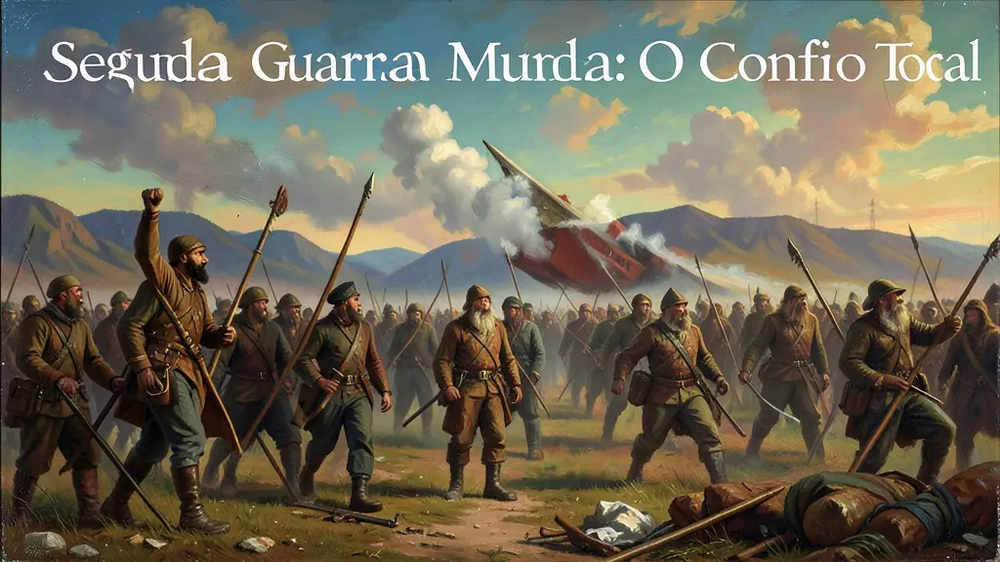
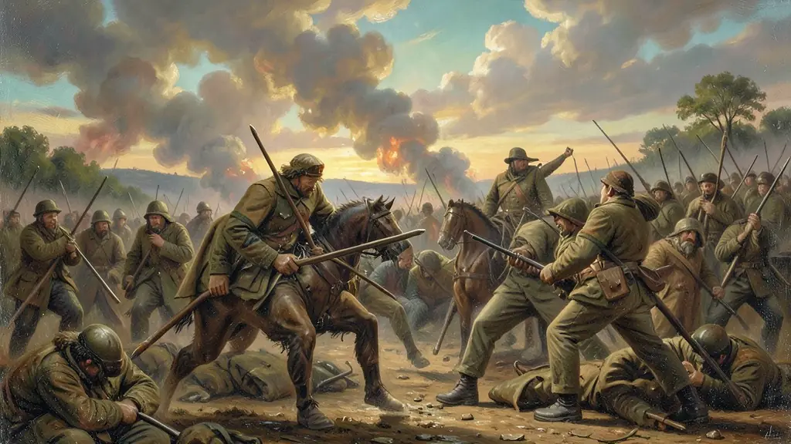
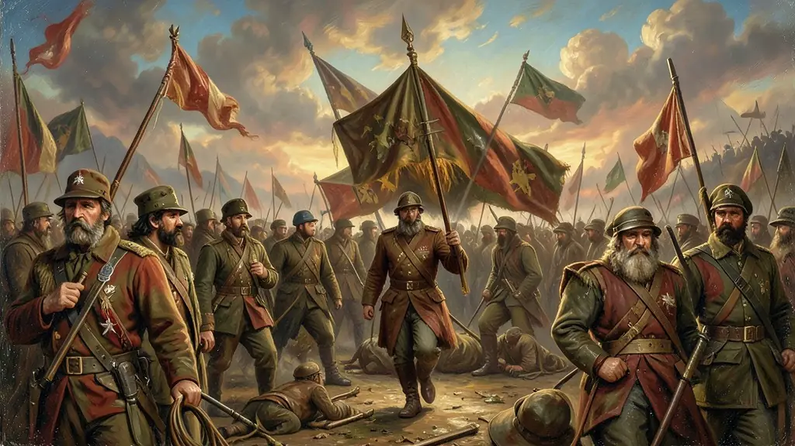

Capítulo 01
1. O Totalitarismo e o Espaço Vital
Hitler e Mussolini não apenas governavam; eles controlavam a mente da massa através da propaganda e da educação militarista. O nazismo introduziu o conceito de 'Pureza Racial' (Ariana) e culpava os judeus e comunistas pela crise econômica alemã. O pacto de não agressão (Ribbentrop-Molotov) com Stalin foi apenas uma jogada estratégica antes do ataque real de 1939.

Capítulo 02
2. Blitzkrieg e o Domínio do Eixo
A Alemanha conquistou a França em semanas, humilhando os franceses no mesmo vagão de trem da I Guerra. O Japão, por sua vez, buscava criar a 'Esfera de Coprosperidade da Grande Ásia Oriental', invadindo a China e o Sudeste Asiático. A guerra tornou-se total: toda a economia e toda a população das nações em combate foram convocadas para o esforço bélico.

Capítulo 03
3. O Dia D e a Virada dos Aliados
Em 6 de Junho de 1944 (Dia D), as tropas britânicas, americanas e do Commonwealth desembarcaram na Normandia, abrindo uma frente ocidental de ataque à Alemanha. Pelo leste, os soviéticos avançavam como uma furiosa locomotiva em direção a Berlim. O Eixo começou a colapsar em todas as frentes, com a queda de Mussolini na Itália e o cerco final ao Bunker de Hitler.

Capítulo 04
4. O Brasil na Guerra: A Cobra Fumou
Inicialmente neutro, o Brasil de Vargas aliou-se aos EUA em 1942. A FEB (Força Expedicionária Brasileira) enviou 25 mil homens para lutar na Itália, vencendo batalhas importantes como **Monte Castello** e **Fornovo**. A participação do Brasil foi crucial para garantir o controle do Atlântico Sul e para acelerar o processo de industrialização nacional através de acordos com o governo Roosevelt (Acordos de Washington).
Capítulo 05
5. O Holocausto e o Pós-Guerra
A libertação dos campos de concentração como Auschwitz revelou o horror do antissemitismo nazista. O mundo reagiu criando os Tribunais de Nuremberg para julgar criminosos de guerra e fundou a Organização das Nações Unidas (ONU) para tentar impedir um terceiro conflito global. No entanto, a divisão do mundo entre o capitalismo americano e o socialismo soviético já estava posta para a Guerra Fria.
A Segunda Guerra Mundial (1939-1945) foi o conflito mais abrangente e destrutivo da história, representando o auge da 'era das catástrofes'. Diferente da Primeira Grande Guerra, este foi um conflito ideológico absoluto entre o Eixo (fascismo/nazismo) e os Aliados (democracias liberais e comunismo soviético). Como observa Eric Hobsbawm, a guerra foi uma luta pela sobrevivência da própria civilização ocidental tal como a conhecemos, onde o avanço tecnológico permitiu uma escala de morte industrializada jamais vista.
O Holocausto e o uso da bomba atômica em Hiroshima e Nagasaki marcaram o fim da inocência tecnológica e científica do homem moderno. Pela primeira vez, a humanidade adquiriu a capacidade de autoaniquilação total. O conflito alterou permanentemente a ordem mundial: a Europa deixou de ser o centro político do planeta, cedendo lugar à bipolaridade entre Estados Unidos e União Soviética, dando início imediato à Guerra Fria e definindo os rumos da geopolítica por quase meio século.
O legado institucional da guerra incluiu a criação da Organização das Nações Unidas (ONU) e a Declaração Universal dos Direitos Humanos, tentativas de criar mecanismos de paz que evitassem um novo colapso global. Para o Enem, o estudo desse período deve focar não apenas nas batalhas, mas na mobilização total das populações civis e no papel das indústrias de guerra. Além disso, a participação do Brasil (FEB) na Itália é um tema recorrente, sendo um fator de crise para a ditadura varguista que se via lutando pela democracia fora enquanto a negava domesticamente.
Fonte: HOBSBAWM, Eric. A Era dos Extremos: O Breve Século XX (1914-1991). São Paulo: Companhia das Letras, 1995.
Atividades interativas
Questões para fixar
A Conferência de Berlim de 1945 e a criação da ONU logo após a guerra visavam:
O governo de Getúlio Vargas utilizou a entrada do Brasil na guerra para: